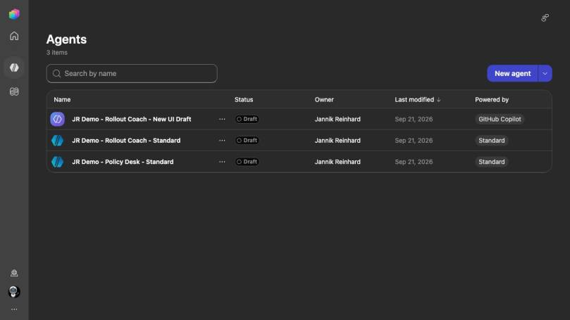
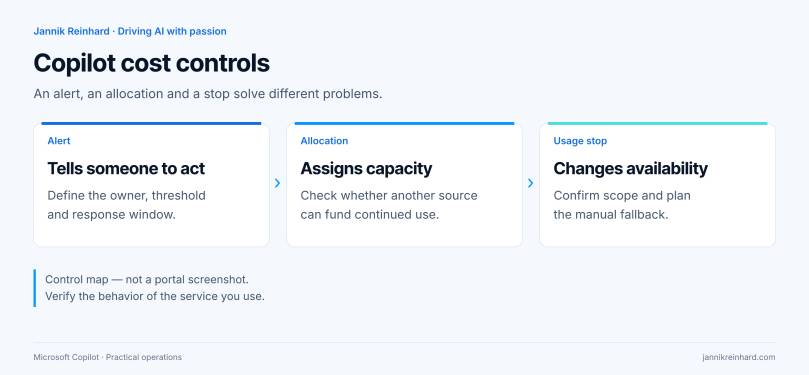
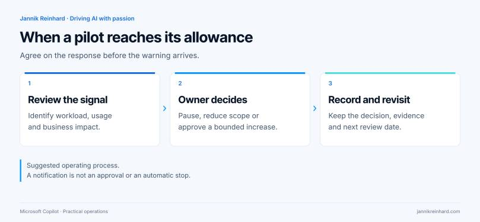

You give a Copilot pilot a budget. Someone enters a number in an admin portal. Finance expects the service to stop at that number.
That expectation is worth checking before the pilot starts.
Some Copilot budgets send alerts. Other controls restrict access or turn an agent off. They are not interchangeable. The answer depends on the service, the billing experience and the setting you configure.
I would start with the control, not the credit price: what exactly should happen when the team reaches its allowance?
This guide separates the main control types and gives you a practical review plan. Product information was checked on 28 September 2026. The screenshot comes from my ModernDevMgmt demo tenant. Billing and enforcement behavior below is Microsoft-documented; I did not enable paid billing or run a limit-exhaustion test for this article.
First identify what you are paying for
“Copilot” is not a sufficiently precise entry in a budget spreadsheet. Write down the experience, its runtime and the admin surface that owns the charge.
For example, my demo environment contains a Rollout Coach using the GitHub Copilot harness and a separate Standard version. The live inventory makes that distinction visible in Powered by. Both are drafts. A shared purpose does not make their billing behavior identical.

My live agent inventory, captured on 28 September 2026. This establishes which harness each demo uses; it does not show configured budgets or measured costs.
Microsoft separates the newer Microsoft 365 usage-based billing experience from classic Copilot Chat and SharePoint-agent pay-as-you-go setup, and from Copilot Studio administration. The newer Cost management experience currently covers services such as Cowork and Work IQ API. Start with the appropriate service documentation rather than applying one portal’s budget instructions to everything. Microsoft’s usage-based billing overview.
For the broader product decision, see my Copilot Chat, Cowork and Autopilot comparison. Here, the question is narrower: how do we keep the chosen workload within an approved operating plan?
A simple map of the controls
| Control | The question it answers | What I would not assume |
|---|---|---|
| Budget alert | Who is warned when spending reaches a threshold? | That receiving an alert also stops the workload |
| Credit allocation | Which capacity is available to this environment? | That other capacity or pay-as-you-go cannot take over |
| Usage limit | When should this user, policy or agent lose access? | That it is a universal cap for every Copilot service |
| Approval process | Who may increase capacity or resume the service? | That the person reading the dashboard owns the decision |
The first three are product controls. The last is an operating decision. I want all four recorded before a team calls its pilot “cost controlled.”

Classic Copilot pay-as-you-go budgets do not stop billing
In the classic Microsoft 365 flow, budgets sit at the billing-policy level. The documented path is Copilot → Billing & usage → Billing policies → your policy → Budget. The budget is not an individual user’s or agent’s allowance.
Microsoft explicitly states that reaching 100% does not stop the service or its billing. Consumption may take four hours to appear, and email alerts can arrive up to 24 hours late. Treat this as delayed visibility, not real-time enforcement. Classic pay-as-you-go budgets.
My recommendation: decide who receives the alert and what that person is allowed to do. “Notify IT” is too vague. Name a service owner, a backup and a response window. Write down whether the next action is investigation, a temporary restriction or a request for more funding.
A deliberately small pilot group makes that response manageable. If a hundred people depend on a workflow, turning it off is an availability decision as well as a budget decision.

New Microsoft 365 spending policies are different
The newer Copilot → Cost Management experience supports policy-level and per-user credit limits for its supported services. Microsoft documents loss of access when the relevant monthly limit is reached. These spending policies control access and limits; they do not reserve a private credit balance for each team. Additional policies have their own limits rather than inheriting a universal ceiling from the default policy. Microsoft 365 spending-policy behavior.
That changes the review I would do with finance. Instead of asking “Where is the budget?”, I would ask:
- Which services does this policy cover?
- Which people can consume against it?
- What happens to the user’s work at the limit?
- Can another team create an independent policy?
- Who approves an increase, and when does the exception expire?
I would also keep a service-specific validation record. A documented limit is not proof that my tenant’s assignments match my intent. Review the actual assignments and test the expected behavior in an approved, bounded pilot before making a production commitment.
Copilot Studio adds environment and agent controls
In Copilot Studio, an environment’s allocation is only part of the picture. Check whether it can draw from unallocated tenant capacity or a linked pay-as-you-go plan after using its own allocation.
Microsoft also documents per-agent monthly limits with notifications and a Stop usage option in Power Platform admin center. That is a different control from an environment allocation or an Azure budget. Copilot Studio capacity and agent limits.
For my Rollout Coach example, I would document the environment’s funding route and the agent’s intended stop behavior separately. A screenshot of the environment name is not enough. Neither is a screenshot of a credit total with no explanation of what happens next.
There is an availability trade-off here: stopping an experimental policy assistant may be acceptable; stopping a workflow that supports an operational deadline may require a manual fallback. I would make that choice explicit instead of leaving it to the person who happens to create the billing plan.
Build a pilot plan before choosing a number
This is a planning example, not measured tenant usage or a price quote.
Imagine a small team evaluating a policy assistant. I would split its plan into three parts:
- Preparation: reviewed source material, a named owner and a fixed set of test questions.
- Evaluation: a bounded number of test runs, with failed attempts recorded rather than silently repeated.
- Pilot operation: limited participants, a review date and an agreed response to a usage warning.
The budget worksheet would track:
| Field | Example decision |
|---|---|
| Business purpose | Help the pilot team find the right rollout rule |
| Allowed activity | Explain the policy; do not change devices |
| Cost owner | Named owner from the team funding the pilot |
| Approval boundary | No increase without that owner’s decision |
| Stop response | Tell users why access paused and where to get help |
| Review outcome | Continue, reduce scope, redesign or stop |
I would not start by dividing the allowance evenly across employees. Someone building and testing an agent has a different workload from someone asking an occasional question. Start with the work you need to complete, then measure the pilot against that work.
Measure cost against an accepted result
My preferred pilot metric is cost per accepted outcome, alongside failure rate and review time.
For a policy assistant, an accepted outcome might mean that the answer uses the current approved policy, points to the right section and does not invent permission to take an action. A cheap answer that needs manual correction is not the result I wanted to buy.
The review should include failed runs, retries and necessary human checking. Keep the acceptance rule fixed during a comparison. Otherwise, one version can appear cheaper simply because you stopped checking it as carefully.
Do not convert a credit total into a final invoice by assumption. Funding sources and billing views matter. Microsoft’s admin dashboards and Azure billing answer different questions; prepaid capacity consumption is not the same as a new pay-as-you-go charge. Copilot consumption versus the Azure bill.
What I would verify before expanding the pilot
- The exact service, harness and environment are recorded.
- The billing route is known, including any overage route.
- The configured control is identified as an alert, allocation or usage stop.
- Someone owns the notification and the response.
- Users know what happens if access stops.
- There is a controlled path for requesting more capacity.
- A reviewer can connect consumption to useful, accepted work.
I would keep screenshots of the actual settings with the change record. This article’s demo screenshot is not a substitute for that evidence in your tenant.
Questions I would expect from the pilot team
Does a Microsoft 365 Copilot license make every agent activity free?
No blanket assumption is safe. Check the workload and harness. Microsoft’s GitHub Copilot harness billing model includes billable authoring and testing activity, not only use after publication. GitHub Copilot harness billing.
Is a lower limit always better?
Not if it interrupts useful work without a fallback. I would start small, keep the failure mode understandable and expand only after reviewing the pilot’s results.
Can I call a budget a hard cap?
Only after identifying the exact enforcement control and its documented scope. A currency threshold on an alerting dashboard is not enough evidence.
My takeaway
The useful question is not “Did we set a Copilot budget?” It is “Which work can continue, who can pay for it, and what happens when the approved allowance runs out?”
Answer that clearly, and the credit discussion becomes much easier to manage.
Stay healthy, Cheers Jannik
Newsletter
New posts, straight to your inbox.
Hands-on guides on Intune, AI and Azure.
190+ guides · 5x Microsoft MVP · No spam, unsubscribe anytime · Privacy